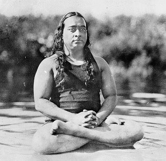

"What is desirable in body culture is the harmonious development of power over the voluntary action of muscles and the involuntary processes of
heart, lungs, stomach and other organs and important glands. This is what gives health, and is the scientific principle underlying the Yoga
exercises."
--- Bishnu Ghosh
My style of teaching is known for its high quality instruction and high standards.
In our yoga practice we strive to develop and strengthen our body, mind and spirit. We aim to achieve this by lovingly disciplining ourselves during our yoga practice to become the best person we can be. Both self-love and self-discipline are needed. By themselves alone, these qualities lead to unhealthy extremes; while fusing strength and sensitivity leads to a balance.
I welcome and invite all yoga students to consciously participate in improving themselves on an ongoing basis. Let your practice room be your own ashram (centre for learning and practice)!
Yoga and Health
The concept of harmonizing the twofold energies in man is very important for health considerations, because the two forces remain in an unbalanced and unharmonized state. Either the prana shakti is dominant or the mental shakti, and the other one is subservient. Due to this imbalance, either physical or mental diseases manifest.
My Yoga Tradition
Our yoga lineage can be traced to a series codified by the Nath sect between the 5th and 10th century. A.D. The Nath sect was founded by Yogi Matsyendranath, regarded as the first human teacher of hatha yoga. Matsyendranath's chief disciple, Gorakhnath, was guru to Yogi Swatmarama, who compiled the wisdom and techniques of hatha yoga in the Hatha Yoga Pradipikas.

Paramahansa Yogananda and Bishnu Charan Ghosh
Bishnu Charan Ghosh, youngest brother of Paramahansa Yogananda - author of the best selling Autobiography of a Yogi, established Ghosh's College of Physical Education in 1924, in Calcutta. Bishnu was trained at an early age in the arts of yoga and meditation at the Ranchi School for Boys founded in 1917 by Paramahansa Yogananda. Ghosh became a celebrated physical culturalist in India and abroad. He traveled world wide and gave amazing demonstrations of mind's control over body. Bishnu's son Biswanath (Bisu) Ghosh followed in his father's footsteps. Bisu's daughter Muktamala is now in charge of Ghosh's College.
Bikram Choudhury
Bikram Choudhury, one of Bishnu Ghosh's most talented students, opened his Yoga College of India headquarters in Beverly Hills, Los Angeles in 1965. Bikram developed his series of 26 postures, based on the main 84 taught by his Guru Bishnu Ghosh. He named it Bikram Yoga, a beginner level class.

Sasha Shkolnikov
Certified Bikram Yoga Teacher (Spring 1995)
My yoga tradition is the Bishnu Ghosh Yoga tradition. These yoga series are highly effective therapeutic yoga methods.
They work synergistically and cumulatively to return the body to a balanced state. The warm environment relaxes the body and helps prevent injury. These exercises
systematically move refreshed and oxygenated blood to one hundred percent of your body, thus driving circulation to each organ and fiber within you, and restoring all systems
to healthy working order. Proper weight, muscle tone, vibrant good health, and a sense of well-being will automatically follow.
I have undergone an intense 4 month Teacher Training with Bikram in 1994, being among the first few in the world to do so.
Since then, I have personally trained dozens of hot
yoga teachers and introduced many thousands of people to the health benefits of yoga practice. I believe in simplicity and effectiveness of life style and practice.
My favourite mantra is - "Simple living and high thinking"
(by my Teacher Paramahansa Yogananda).
Bikram Choudhury (right) and me (left),
at my TTC Graduation in April 1995, after a 4 month TTC Intensive.
"Sasha's yoga practice is 99.9% perfect, and he is one of my best teachers." - Bikram
"I wish you to save the World with Love and Peace." - Bikram
These are the classes that I offer:
Bikram Method:
All Level Foundation Class, consisting of 26 yoga postures and 2 breathing exercises. Based on the Bishnu Ghosh Yoga Tradition.
Safe, balanced, thorough, challenging.
For chart of class postures, click here.
Class Duration: 90 minutes.
{kind=link}
Hot Basic:
All Level Foundation Class, consisting of 28 yoga postures and 2 breathing exercises. A 'Sibling' to the Bikram Method. Based on the Bishnu Ghosh Yoga Tradition.
Safe, balanced, thorough, challenging.
For list of class postures, click here,
and for Sun Salutation steps click here.
Class Duration: 90 minutes.
Basic+ (Hot Intermediate):
This Intermediate Level class draws on 40-45 yoga postures and 2 breathing exercises, adding several more strengthening and opening exercises
to the practice. Not suitable for beginners. Solid foundation in Hot Basic is expected.
Class Duration: 1.5 - 2 hours.